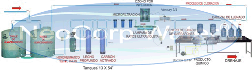
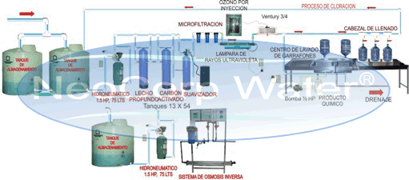

PLANTAS PURIFICADORAS DE AGUA CON OSMOSIS INVERSA | AGUA PURIFICADA CON OSMOSIS INVERSA
PLANTAS PURIFICADORAS DE AGUA CON OSMOSIS INVERSA PARA VENTA DE AGUA PURIFICADA EN GARRAFÓN O BOTELLA PET
NEOCORP WATER ES LIDER EN VENTA DE PLANTAS PURIFICADORAS DE AGUA CON OSMOSIS INVERSA, PLANTAS DE AGUA PURIFICADA CON OSMOSIS INVERSA EN MEXICO, CENTRO Y SUDAMERICA. EQUIPOS DE MARCAS ORIGINALES.
Las Plantas Purificadoras de Agua con osmosis inversa que ofrecemos son equipos completos, de marcas originales y con los mejores precios del mercado. Le invitamos a leer nuestras recomendaciones para seleccionar su Planta de Agua Purificada con o sin osmosis inversa CLIC
PLANTA PURIFICADORA DE AGUA NCW-1000 EN FIBRA DE VIDRIO BASICA (SIN OSMOSIS INVERSA)

Este primer modelo de Planta Purificadora de Agua es el modelo básico que no incluye osmosis inversa (ver nota al final de la tabla). Contiene todos los equipos necesarios para filtrar, desinfectar y producir agua purificada. Esta Planta Purificadora de Agua tiene una producción máxima de 1000 garrafones de 19 litros en 8 horas de funcionamiento.
LA PLANTA PURIFICADORA DE AGUA BASICA (SIN OSMOSIS INVERSA) INCLUYE:
ELEMENTOS |
DESCRIPCIÓN DE LA PLANTA PURIFICADORA DE AGUA BASICA |
1 |
Filtro Multicama o multimedia en fibra de vidrio con dimensiones: 13 pulgadas de diametro por 54 pulgadas de alto. Materiales de filtración: gravillas de tres diferentes granulometrias, arena silica 20-30 y antracita, valvula con entrada y salida a 1 pulgada. |
1 |
Filtro de carbón activado granular GAC en fibra de vidrio con dimensiones: 13 pulgadas de diametro por 54 pulgadas de alto. Materiales de filtración: carbón coco nut o de cascara de coco, valvula con entrada y salida a 1 pulgada. |
1 |
Filtro Ablandador, Suavizador o descalcificador en fibra de vidrio que contiene 2 pies cubicos de resina suavizadora con dimensiones: 13 pulgadas de diametro por 54 pulgadas de alto. Incluye Tanque cilindrico para salmuera con dimensiones 18 pulgadas de diámetro por 33 pulgadas de alto y flotador.
NOTA: Si usted desea la Planta Purificadora de Agua Basica con el equipo suavizador o ablandador incluido unicamente debe sumar el precio de este en el precio de oferta. El costo del equipo suavizador, ablandador o descalcificador es de $9,000 pesos Mx |
3 |
Filtros Pulidores o abrillantadores con dimensiones de 10 pulgadas de alto x 5 pulgadas de diámetro y con cartucho polyspun de 20, 10 y 5 micrones para obtener agua cristalina. |
1 |
Lampara germicida de luz ultravioleta para 90 Litros por Minuto (con dos focos UV de 55 Watts cada uno). CUERPO EN ACERO INOXIDABLE. |
1 |
Ozonificador de Agua para eliminar virus y bacterias. Capacidad de producción: 2.4 gramos por hora, incluye válvula venturi y válvula check antiretorno de agua. CUERPO EN ACERO AL CARBON. |
1 |
Lavadora y enjuagadora de garrafones de carrito TRIPLE (dos posiciones para lavado interno y externo de tres garrafones a la vez). Construida en acero inoxidable, uso rudo. Incluye bomba para inyección de sanitizante de garrafones con cabeza en acero inoxidable y regadera aspersora para enjuagado externo de los garrafones. |
1 |
Tanque hidroneumático de 76 litros en acero al carbon con base superior para montaje de bomba de 1.5 hp con cabeza construida en acero inoxidable, incluye manómetro y automatico para bomba. |
2 |
Tanques de almacenamiento con 5000 litros de capacidad para almacenar agua sin tratamiento. Dimensiones: 1.86 metros de diámetro por 2.14 metros de alto. |
NOTA: SI USTED DESEA INCLUIR EL FILTRO SUAVIZADOR, ABLANDADOR O DESCALCIFICADOR DE AGUA EN LA PLANTA PURIFICADORA DE AGUA BASICA UNICAMENTE DEBE SUMAR EL PRECIO DE ESTE AL PRECIO DE OFERTA.
PRECIO.....................................................$69,000.00 pesos Mx.
PLANTA PURIFICADORA DE AGUA NCW-1000-OI EN FIBRA DE VIDRIO INCLUYE EQUIPO DE OSMOSIS INVERSA

Este segundo modelo para Planta Purificadora de Agua incluye equipo de osmosis inversa. Contiene todos los equipos necesarios para filtrar, desinfectar y producir agua purificada con una calidad que puede igualar o superar a cualquier marca comercial. Esta Planta Purificadora de Agua con osmosis inversa tiene una producción máxima de 1000 garrafones de 19 litros en 8 horas de funcionamiento.
LA PLANTA PURIFICADORA DE AGUA CON OSMOSIS INVERSA INCLUYE:
ELEMENTOS |
DESCRIPCIÓN DE LA PLANTA PÙRIFICADORA DE AGUA CON OSMOSIS INVERSA |
1 |
Filtro Multicama o multimedia en fibra de vidrio con dimensiones: 13 pulgadas de diametro por 54 pulgadas de alto. Materiales de filtración: gravillas de tres diferentes granulometrias, arena silica 20-30 y antracita, valvula con entrada y salida a 1 pulgada. |
1 |
Filtro de carbón activado granular GAC en fibra de vidrio con dimensiones: 13 pulgadas de diametro por 54 pulgadas de alto. Materiales de filtración: carbón coco nut o de cascara de coco, valvula con entrada y salida a 1 pulgada. |
1 |
Filtro Ablandador o Suavizador en fibra de vidrio que contiene 2 pies cubicos de resina suavizadora con dimensiones: 13 pulgadas de diametro por 54 pulgadas de alto. Incluye Tanque cilindrico para salmuera con dimensiones 18 pulgadas de diámetro por 33 pulgadas de alto y flotador. |
3 |
Portafiltros Pulidores o abrillantadores con dimensiones de 10 pulgadas de alto x 5 pulgadas de diámetro y con filtro polyspun de 20, 10 y 5 micrones para obtener agua cristalina. |
1 |
Sistema de Osmosis Inversa capacidad para 4600 Galones por día. Montaje en base en acero estructural, DOS membranas de osmosis inversa de alta producción y DOS portamembranas de osmosis inversa construidos en acero inoxidable medidas 4 pulgadas de diámetro por 40 pulgadas de largo. Bomba multietapas de 1.5 HP, 2 flujometros para medir rechazo y producto (agua producida por osmosis inversa), 2 medidores de presion (operación y entrada al equipo), interruptor para paro por alta presión y control para evitar funcionamiento de la bomba en seco. EL EQUIPO DE OSMOSIS INVERSA FUNCIONA AUTOMATICAMENTE.
|
1 |
Lampara germicida de luz ultravioleta para 90 Litros por Minuto (con dos focos UV de 55 Watts cada uno). CUERPO EN ACERO INOXIDABLE. |
1 |
Ozonificador de Agua para eliminar virus y bacterias. Capacidad de producción: 2.4 gramos por hora, incluye válvula venturi y válvula check antiretorno de agua. CUERPO EN ACERO AL CARBON. |
1 |
Lavadora y enjuagadora de garrafones de carrito TRIPLE (dos posiciones para lavado interno y externo de tres garrafones a la vez). Construida en acero inoxidable, uso rudo. Incluye bomba para inyección de sanitizante de garrafones con cabeza en acero inoxidable y regadera aspersora para enjuagado externo de los garrafones. |
2 |
Tanques hidroneumáticos de 76 litros en acero al carbon con base superior para montaje de 2 bombas de 1.5 hp con cabeza contruida en acero inoxidable, incluye manómetro y automatico para cada bomba. |
1 |
Tanque de almacenamiento con 5000 litros de capacidad para almacenar agua por osmosis inversa producto. Dimensiones 1.86 metros de diámetro por 2.14 metros de alto |
2 |
Tanques de almacenamiento con 5000 litros de capacidad para almacenar agua sin tratamiento. Dimensiones: 1.86 metros de diámetro por 2.14 metros de alto. |
PRECIO.....................................................$132,500.00 pesos Mx.
COMPARE NUESTRAS PLANTAS PURIFICADORAS DE AGUA CON OSMOSIS INVERSA CON LOS EQUIPOS DE NUESTROS COMPETIDORES y notara equipos que no le incluyen o que son hechos o fabricados rusticamente en el mejor de los casos, en el peor PUEDE ESTAR ADQUIRIENDO SIN SABER EQUIPOS DE PESIMA CALIDAD CON UN TIEMPO DE VIDA DIEZ VECES MENOR AL DE UN EQUIPO ORIGINAL.
PUNTOS PARA COMPRA:
- Contemplar el 16% por concepto de IVA en el precio total (Aplica solo en México).
-El pago debera ser de la siguiente forma: 60% para confirmación de orden de pedido y el 40% restante para liquidar la planta purificadora de agua tres días antes del envio a su destino. Los pagos deberán ser por transferencia o depósito bancario.
-Incluir si lo desea costo por instalación en cualquier Estado de la República Mexicana para la planta purificadora de agua sin osmosis inversa $3,500 Pesos Mx. Costo por instalación para la planta purificadora de agua con osmosis inversa $4,300 Pesos Mx.
-Incluir si lo desea costo de materiales de instalación (kit para 25 metros cuadrados en tuberia de PVC cedula 40 y accesorios) para la planta purificadora sin osmosis inversa $6,500 Pesos Mx. Costo de materiales de instalación para la planta purificadora de agua con osmosis inversa $9,500 Pesos Mx.
-Flete de la Planta Purificadora de Agua sin osmosis inversa, Planta Purificadora de Agua con osmosis inversa no incluido, consultar el precio que depende del lugar de destino.
-Viaticos para un técnico, consultar el costo que dependen del lugar de destino.
Enviamos Plantas Purificadoras de Agua con Osmosis Inversa a cualquier parte de México, Centroamerica y Sudamerica: UPS, DHL, Fedex, Estafeta, envío maritimo, envio terrestre o consolidado.
Para compra, precio, costo, cotización y venta sobre Plantas Purificadoras de Agua con Osmosis Inversa contactar vía telefónica o correo electrónico y de esta forma nuestros expertos atenderan su solicitud con prontitud.
|